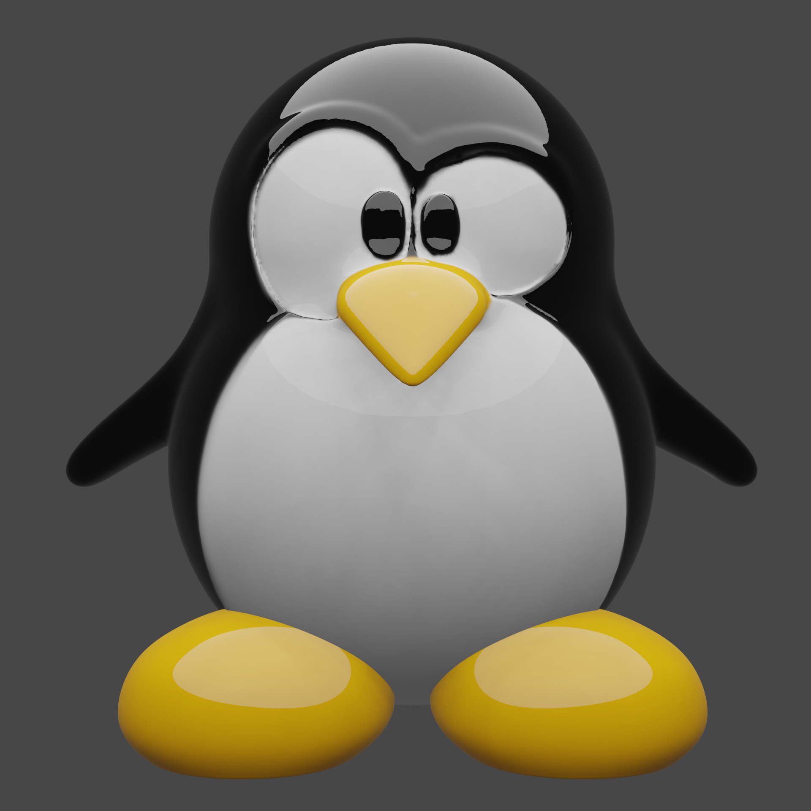

CONTACT
+687 83 77 43
laboitatom @ gmail.com
Dumbéa - Nouvelle Calédonie
PROFIL
DATA ARCHITECT
LANGUES
Français
Anglais
Formations
2022 :
Spécialisation Preparing for Google Cloud Certification: Cloud Data Engineer (Parcours de 6 formations)2022 :
Spécialisation Machine learning with Tensorflow on Google Cloud (Parcours de 5 formations)2022 :
Spécialisation Preparing for Google Cloud Certification: Machine Learning Engineer (Parcours de 9 formations)2016 :
RSSI Sécurité dans les développements, architectures et administration des SI2016 :
Agile avancé2015 :
Formation management2015 :
Javascript Avancé2014 :
certification Scrum Master2014 :
Introduction aux innovations games2014 :
Oracle fusion middleware2012 :
Java performances et optimisation2012 :
Design Patterns Java EE2007 :
IUP Ingénierie Informatique (Université de Bretagne Ouest), Master Conception et développement logiciel
COMPETENCES
Data
- Python / Jupyter notebook
- Tensorflow, Torch, Scikit learn, ...
- MlFlow
- MLOps
- Pandas, PySpark, apache beam
Algorithmes
- Decision tree
- Linear regression
- Logistic regression
- K-means
- Gradient boosting
Architecture
- Google Cloud Plateform
- Kubernetes / ArgoCD
- Microservices / Application Cloud Native
- CI/CD / Github actions
- Terraform
Développement logiciel
- Django / Flask / Fastapi
- Spring Boot
- Angular / Vue.js
- Typescript / Javascript
- HTML 5 / CSS 3 / SCSS
- Postgresql / Oracle DB
- Git, maven, ...
Gestion de projet et management
- SCRUM
- PMI
- Management 3.0
EXPERIENCES PROFESSIONNELLES
2023 à aujourd'hui
Gouvernement de la Nouvelle Calédonie - Direction du Numérique et de la Modernisation
Architecte data
- EN COURS :Déploiement d’une modern data stack on premise
- Pour certaines données “sensibles” qui ne peuvent être mises sur GCP
- Analyse de l’état de l’art
- ClickHouse, Apache SuperSet, Knative, …
- Création d’un "clone" de https://labonneboite.francetravail.fr/
- Projet annulé avant la mise en production à cause des dernières émeutes
- Analyse de l’état de l’art
- Catboost, scikit learn
- Outil d’évaluation de la masse salariale de la DRHPFNC
- Outil d’évaluation de la masse salariale de la DRHPFNC
- Scikit learn, gradio
- Chatbot pour service-public.nc
- Création d’un chatbot avec le contenu du site
- RAG, Langchain, chainlit
- Mise en place d’une nouvelle infrastructure dédiée à la data sur google cloud plateform
- Architecture réseau “Hub and Spoke”
- Secrets versionnés sur github
- Logs et monitoring centralisée
- Projets orientés data avec gestion des droits et accès
- https://github.com/gouv-nc-data/
- Terraform, github, github action
- Créations de modules terraform pour automatiser et faciliter le transfert de données on premise vers Google Cloud BigQuery
- Cloud Run: scripts python
- Dataproc (pyspark): copie automatique de bdd vers BigQuery
- Schedule et monitoring automatique
- Terraform, github, github action
- Mise à disposition de données métier pour exploitation dans BigQuery, datastudio ou Spreadsheet
- Automatisation des copies de données
- Accompagnement au changement et montée en compétence des agents
2021 - 2023
Gouvernement de la Nouvelle Calédonie - Direction du Numérique et de la Modernisation
Architecte des systèmes d’information
- Stratégie de migration vers kubernetes
Définition d’une stratégie de migration des nouvelles applications et des anciennes sur une nouvelle infrastructure basée sur kubernetes
- Accompagnement au changement
- DevSecOps
- Infrastructure as code
- Application Cloud Nativ
- Stratégie de migration sur le cloud Définition d’une stratégie d'hébergement d’applications métier sur Google Cloud Plateform
2018
Gouvernement de la Nouvelle Calédonie - Direction des Technologies des Système d’Informations
Chef de projet NC Connect
https://connect.gouv.nc
Plateforme unique d’authentification du Gouvernement de la Nouvelle Calédonie
Gestion du projet selon PMI
Technologies
OpenId Connect, Spring boot, Angular, Postgresql, Haute disponibilité, Déploiement continue
2013 - 2016
Gouvernement de la Nouvelle Calédonie - Direction des Technologies des Système d’Informations
Architecte logiciel
Mise en oeuvre d’architectures logiciels sur les différents projets et téléservices du gouvernement en fonction des besoins et de l’existant
Technologies
WOA, Microservices, CQRS / ES, Redux, PWA, Applications mobiles hybrides
2013 - 2016
Gouvernement de la Nouvelle Calédonie - Direction des Technologies des Système d’Informations
Architecte logiciel
Mise en place d’un nouveau framework de développement
Remplacement d’un socle payant (oracle) par de l’open source
- Frontend Angular
- angular
- NgRx
- Typescript
- Saas
- Progressive Webapp
- Backend Spring boot
- Java LTS
- Base postgresql, flyway
- Architecture orientée microservices
- Outils spring cloud, serveurs de configuration (spring cloud config), annuaire de services (spring cloud netflix eureka), Circuit breaker (Spring cloud netflix hystrix), Spring boot admin
- Chaîne d’intégration continue et déploiement continu
- Jenkins / pipeline
- Gitlab
- Git flow
- Sonarqube
- Artifactory
- Tests unitaires, tests d’intégrations, tests de bout en bout, tests de montée en charge
- Gestion du changement (accompagnement, formation, ateliers, …)
- Mise en oeuvre participative (Atelier de co création, serious games, …)
- Ouverture d’une partie du code source sur github
- POC docker
- Authentification centralisée basée sur OpenId Connect
- Intégration avec le SI existant : GED alfresco et SAE docubase (CMIS), jira, SIG
- Support aux développeurs et chefs de projets
2017
Gouvernement de la Nouvelle Calédonie - Direction des Technologies des Système d’Informations
Architecte logiciel
Modernisation du socle de développement ADF 11 et 10
Technologies
Oracle ADF 12 essentials,
Java 11,
Tomcat embarqué,
POC de migration de Oracle DB vers Postgresql
2013 - 2017
Gouvernement de la Nouvelle Calédonie - Direction des Technologies des Système d’Informations
Manager de proximité
Chef de section AXI (Architecture de cadre commun d'interopérabilité)
Technologies
- Management d’une équipe de 5 personnes
- activité de support
- formation
- organisation et animation de présentations techniques et de veille technologique hebdomadaires
2013 - 2017
Gouvernement de la Nouvelle Calédonie - Direction des Technologies des Système d’Informations
Concepteur développeur
Application mobile de résultats en temps réel des élections provinciales pour ipad
https://samobile.gouv.nc
Technologies
- python / django
- angularjs
- websocket
2008 - 2013
Gouvernement de la Nouvelle Calédonie - Direction des Technologies des Système d’Informations
Concepteur Développeur Oracle ADF / Architecte logiciel
Technologies
- ADF 10 et 11
- Java 5 et 6
- Oracle DB
- JasperReport
- Maven
2007 - 2008
IdSoft
Concepteur Développeur
Technologies
Java, J2e, Access, iText, Python, Django, ReportLab, Oracle10g, JSF, Spring, Hibernate, IceFaces, Jasper report.
2005 - 2006
Stages en entreprises
Développement d’un logiciel de suivi de service après vente
Simulation d’agents collaboratifs émotionnels
Conception et développement d’un méta-modèle multi-agents d’une colonne d’eau
Développement d’un portail web de consultation de données océanographiques pour l’IRD de Nouméa (Modélisation et conception de la base de données PostgreSQL, Reprise des données Oracle vers PostgreSQL, développement du portail).
Technologies
Delphi, Access, C++, OpenGL, Java/J2EE, Oracle, PostgreSQL, JSF, Spring, Hibernate